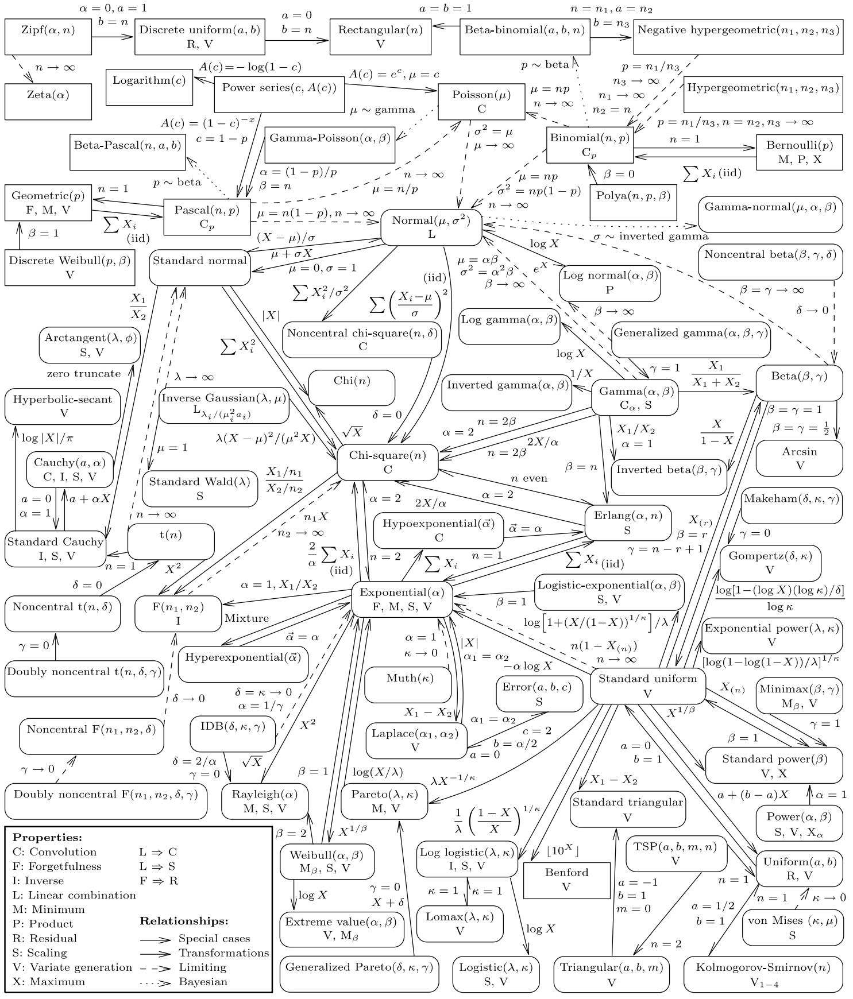

引言
在传统的数理统计教科书中，概率分布往往被孤立的介绍，很少讨论他们之间的联系。本文对 Leemis 在1986年绘制的图表进行了更新，展示出许多常见单变量概率分布的属性和关联。

图-1 含有 76 个单变量概率分布，其中 19 个离散分布，57 个连续分布。矩形外框表示离散分布，圆角外框表示连续分布。除 Benford 分布外，离散分布都排布在图表上部。每个分布包含两行描述。第一行给出分布的名称和参数，第二行列举其属性。
对分布参数做如下约定：
- n: 无论有无下标，表示正整数
- p: 满足 0 < p < 1
- \alpha, \sigma: 无论有无下标，表示正的尺度参数 (scale parameter)
- \beta, \gamma, \kappa: 表示正的形状参数 (shape parameter)
- \mu, a, b: 表示位置参数 (location parameter)
- \lambda, \delta: 表示正的参数
偶尔的例外会在附录中注明 (附录见原文)。 受限于排版，有好多分布没有被包含在图中。
分布属性
单变量概率分布有不同的属性，列在 图-1 中。
Linear combination (线性组合性)：表明服从此分布的多个独立随机变量的线性组合服仍从此分布。
例：若 n 个独立随机变量 X_i \sim N(\mu_i, \sigma_i^2)，其中 i=1,2,...,n 且 a_i \in \R，则
\sum_{i=1}^n a_i X_i \sim N \bigg( \sum_{i=1}^n a_i \mu_i, \sum_{i=1}^n a_i^2 \sigma_i^2 \bigg)
Convolution (卷积性)：表明服从此分布的多个独立随机变量之和仍服从此分布。
例：若 n 个独立随机变量 X_i \sim \chi^2(k_i)，其中 i=1,2,...,n，则
\sum_{i=1}^n X_i \sim \chi^2\bigg(\sum_{i=1}^n k_i \bigg)
Scaling (缩放性)：表明服从此分布的独立随机变量乘以任意正实数后仍服从此分布。
例：若随机变量 X \sim \text{Weibull}(\alpha, \beta) 且 k>0，则
kX \sim \text{Weibull}(\alpha k ^\beta, \beta)
Product (乘积性)：表明服从此分布的独立随机变量之积仍服从此分布。
例：若 n 个独立随机变量 X_i \sim \text{Lognormal}(\mu_i, \sigma_i^2)，其中 i=1,2,...,n，则
\prod_{i=1}^n X_i \sim \text{Lognormal}\bigg(\sum_{i=1}^n \mu_i, \sum_{i=1}^n \sigma_i^2 \bigg)
Inverse (倒数性)：表明服从此分布的随机变量的倒数仍服从此分布。
例：若随机变量 X \sim F(n_1, n_2) 则
\frac 1 X \sim F(n_2, n_1)
注：服从 F distribution
Minimum (最小性)：表明多个服从此分布的独立随机变量的最小值仍服从此分布。
例：若 n 个独立随机变量 X_i \sim \text{Exp}(\alpha_i)，其中 i=1,2,...,n，则
\min\{X_1, X_2,...,X_n\} \sim \text{Exp} \bigg(1 \bigg/ \sum_{i=1}^n \frac 1 {\alpha_i} \bigg)
MaXimum (最大性)：表明多个服从此分布的独立随机变量的最大值仍服从此分布。
例：若 n 个独立随机变量 X_i \sim \text{standard power}(\beta_i)，其中 i=1,2,...,n，则
\max\{X_1, X_2,...,X_n\} \sim \text{standard power} \bigg(\sum_{i=1}^n \beta_i \bigg)
Forgetfulness (健忘性)：也叫做无记忆性，表明此分布的随机变量大于某值的条件分布与原无条件分布相同，即 X|X>a 与 X 的分布不仅同族且分布参数也相同。
例：离散分布中只有 Geometric 分布，连续分布中只有 Exponential 分布具有这种性质。
Residual (残留性)：表明此分布的随机变量大于某值的条件分布与原无条件分布同族，即 X|X>a 与 X 服从同一类分布，但分布参数可以不同。可见健忘性是残留性的特例。
例：若 X \sim \text{ Uniform }(a,b)，而 k \in (a,b)，则 X>k|X 也属于均匀分布。
注记健忘性 和 残留性 一般都是针对 X>a 这种形式的条件进行定义的。因为应用中常关注等待时间或生存时间超过某一阈值后的情况。如果硬要采用其他条件，那就要具体情况具体分析了。比如对于 指数分布，如果以 X<a 为条件，就不是指数分布了。
Variate generation (变量生成性)：表明连续随机变量的反累计分布函数 (Inverse CDF) 可以表达为封闭形式 (closed form)。对于离散随机变量，具有这个属性意味着存在时间复杂度为 O(1) 的算法来生成这个随机变量，无需循环或利用其他特性。
例：若随机变量 X \sim \text{Exp}(\alpha)，则其 Inverse CDF 为
F^{-1}(u) = -\alpha \ln(1-u), \; u \in (0,1)
这些属性之间存在包含关系。属性 L 包含了属性 C 和 S，所以图中 C 和 S 不会被出现在具有 L 属性的分布中。类似的还有属性 F 包含着 R。
有些属性只在特定情况下才成立。比如具有的 M 属性的 Weibull 分布，只有当形状参数固定时才成立。所以在图-1中 Weibull 分布的第二行写成 M_\beta，以示限制。
分布之间的关系
图-1 使用了三种线型来连接分布：
- 实线 表示特殊情形 (Special cases) 和 变换 (Transformations)。变换的标注中通常出现 X，以区别于特殊情形。术语 “变换” 在这里使用得很宽泛，包括 顺序统计量 (Order statistic) 的分布，截断随机变量，或采用随机变量的混合。
- 虚线 表示渐进关系。通常是对一个或多个参数向参数空间的边界取极限。
- 点线 表示贝叶斯关系。例如 Beta-binomial，Beta-Pascal，Gamma-normal，Gamma-Poisson。证明-11
Binomial、\chi^2、Exponential、Gamma、Normal 和 Uniform分布作为枢纽出现，突出了它们在应用统计中的中心地位。 求和限制在从 i=1 到 n。符号 X_{(r)} 表示从大小为 n 的随机样本中抽取的第 r 个顺序统计量。
不同分布在合适的分布参数下会成为同一分布。例如：证明-12
- 均值为 2 的 Exponential 分布 和 2个自由度的 \chi^2 分布。
- 具有偶数自由度的 \chi^2 分布 与 尺度参数为 2 的 Erlang 分布。
- 样本大小 n=1 的 Kolmogorov-Smirnov 分布 与 (1/2, 1) 的 Uniform 分布。
这些关系都用双头箭头表示。
利用概率积分变换，可以在 Standard uniform 分布和所有满足 F(X) \sim \text{Uniform}(0,1) 的分布之间建立联系。类似的，可以在 Standard exponential 分布和所有满足 H(X) \sim \text{Exp}(1) 的分布之间建立联系。其中 H(x)=\int_{-\infin}^x f(t)/(1-F(t))dt 是累计风险函数 (Cumulative hazard function)。证明-13
所有可以表示为随机变量之和的随机变量，在求和项数趋于无穷时，由于中心极限定理，其分布逐渐收敛到 Normal 分布。这类分布有：
- Binomial 分布：n 个独立的 Bernoulli 随机变量之和。每次实验的成功概率为 p。描述 n 次独立 Bernoulli 实验中，成功的次数。
- \chi^2 分布：k 个独立的 Standard normal 随机变量的平方和的分布，其中k是自由度。
- Erlang 分布：k 个独立同分布的 Exponential 随机变量之和，其中 k 是正整数。描述等待收到 k 次信号的时间间隔。
- Gamma 分布：k 个独立同分布的 Exponential 随机变量之和，其中 k 是正实数。Gamma 分布是 Erlang 分布的推广。描述完成 k 的任务量(可以是部分完成)所需的时间。
- Hypoexponential 分布：类似于 Gamma 分布，但可以是独立的多个不同 Exponential 随机变量之和，每个 Exponential 分布都有自己的参数和权重。用于描述多阶段系统的总完成时间。
- Pascal 分布：n 个独立的 Bernoulli 随机变量之和。描述需要累计到 k 次成功所需的实验次数。
此外，所有分布都跟 Normal 分布有渐进 (Asymptotic) 关系，只要他们具有有限均值和有限方差，中心极限定理保证了随机变量的和收敛到 Normal 分布。
许多变换是可逆的，图-1中以双箭头连接两个分布。考虑 Normal 分布和 Standard normal 分布的关系。如果 X \sim N(\mu, \sigma^2)，则 \frac {X-\mu}{\sigma} \sim N(0,1)。反过来，如果 X \sim N(0,1)，则 \mu+\sigma X \sim N(\mu, \sigma^2)。前一个变换用于将随机变量标准化，以便查表求值。后一个变换用于随机变量的生成。但为了简洁， 在大多数情况下逆变换是隐含的，并不显示在图中。比如对 Weibull 随机变量取对数得到 Extreme value 随机变量；对 Extreme value 随机变量取指数得到 Weibull随机变量。证明-14
有些变换可以产生尚未定名的全新分布： 证明-15
- Extreme value 分布和 Log gamma 分布意味着对任意 Survival distribution 取对数的变换，都将得到一个Support是整个实数轴的分布。
- Inverted gamma distribution 意味着对任意 Survival distribution 取倒数可以得到另一个 Survival distribution。
- 对于Support为 (0,1) 的随机变量，交换 F(x), F^{-1}(u) 的角色会得到对应的 Complementary distribution。
另外，图-1中的一些变换可以启发随机数生成器的设计。比如 Box-Muller 算法，将 \text{Uniform}(0,1) 先变换到指数分布，再到 \chi^2分布，再到 Standard normal 分布，最后利用缩放变换到所需的 Normal 分布。 证明-16
多余的箭头一般不会出现在图中。比如 Minimax 分布和 Standard Uniform 分布之间并没有箭头连接，因为已经有 \text{Minimax} \rightarrow \text{Standard power} \rightarrow \text{Uniform}(0,1)。类似的，虽然 Exponential 分布是 Gamma 分布的特殊情形，但二者没有箭头连接，因为已有 \text{Gamma} \rightarrow \text{Erlang} \rightarrow \text{Exponential}。
为了保持图表清晰，有些不适合或相距太远的分布并没出现在其中。比如：
- Exponential 随机变量的向下取整，得到 Geometric 随机变量。 证明-17
- 连续 Uniform 随机变量向下取整，得到离散 Uniform 随机变量。
- Exponential 随机变量是 Makeham 随机变量在 \delta=0 的特殊情况。
- Standard power 随机变量是 Beta 随机变量在 \delta=1 的特殊情况。
- 如果 X \sim F(n_1, n_2), 则 \frac 1 {1+(n_1/n_2)X} 服从 Beta 分布。 证明-18
- 以 n_1, n_2 为自由度, 以 \delta,\gamma 为非中心参数的双重非中心 F 分布定义为 \big( \frac {X_1(\delta)}{n_1} \big)\big( \frac {X_2(\gamma)}{n_2} \big)^{-1}， 其中 X_1(\delta),X_2(\gamma) 是非中心 \chi^2 随机变量，自由度分别是 {n_1},{n_2}。 wikipedia
- Normal 分布和 Uniform 分布分别是 Generalized error 分布的特例和极限情况。 wikipedia
- Binomial 分布是 Power series 分布的特例。 证明-19
- Normal 分布是 von Mises 分布在 \kappa \to \infin 时的特例。 证明-20
- Half-normal，Rayleigh，Maxwell-Boltzmann 分布是 \chi 分布在自由度分别为 n=1,2,3 的情形。 证明-21
- 两个独立的 Generalized gamma 随机变量的比值是 Beta 分布。 证明-22
此外，还有一些没绘制在图表中变换，是由两种分布组合来得到第三种分布。以下是两个例子:
- 自由度 n 的 t 分布可定义为：\frac Z {\sqrt{X/n}}, 其中 Z \sim N(0,1), X \sim \chi^2(n)，且二者独立。 证明-23
- 以 \delta 为非中心参数的非中心Beta分布可以定义为：\frac X {X+Y}，其中 X \sim \text{noncentral } \chi^2(\beta,\delta), Y \sim \chi^2(\gamma)。 证明-24
证明-1
多个随机变量的线性组合所服从的分布不是多个分布函数的简单叠加。比如计算掷两次骰子的点数之和的分布，和为 5 点的概率等于 \{(1, 4), (2, 3), (3, 2), (4, 1)\} 四种情况的概率之和，也就是需要计算卷积。
考虑随机变量 Y = a_1 X_1 + a_2 X_2 的简单情形，其中随机变量 X_1, X_2 独立。将 X_1 视为自由的变量，则对于给定的 Y，有 X_2=\frac {W - a_1 X_1}{a_2}。于是 Y 的概率密度函数 (PDF) 应为:
f_Y(y) = \int f_{X_1, X_2}(x_1, \frac {y - a_1 x_1}{a_2}) dx_1 = \int f_{X_1}(x_1)f_{X_2}(\frac {y - a_1 x_1}{a_2}) dx_1
但这个积分比较难算，特别是当涉及多个随机变量时。于是考虑使用特征函数 (Characteristic function)，它对于计算多个随机变量的线性组合特别有用。特征函数是对概率分布的傅里叶变换。特征函数定义为:
\varphi_X(t) \colonequals E[e^{itX}]=\int e^{itx} dF_X(x)=\int e^{itx} f_X(x)dx
其中 E 表示期望值，F_X, f_X 分别是随机变量 X 的累计分布函数 (CDF) 和 概率密度函数 (PDF).
由于 X_1, X_2 独立，所以期望值可以分解：
\begin{align*} \varphi_Y(t) &= E[e^{itY}] \\ &= \int \int e^{it(a_1 x_1 + a_2 x_2)} f_{X_1,X_2}(x_1,x_2) dx_1 dx_2 \\ &= \int e^{i a_1 t x_1} f_{X_1}(x_1) dx_1 \int e^{i a_2 t x_2} f_{X_2}(x_2) dx_2 \\ &= E[e^{i a_1 t x_1}]E[e^{i a_2 t x_2}] \\ &= \varphi_{X_1}(a_1 t)\varphi_{X_2}(a_2 t) \end{align*}
同理可以推广到多个随机变量的线性组合：
\varphi_{a_1 X_1+...+a_n X_n}(t)=\varphi_{X_1}(a_1 t)...\varphi_{X_n}(a_n t)
设 随机变量 Y=\sum_{i=1}^n a_i X_i，其中 X_i 是 n 个独立的 Normal 随机变量 X_i \sim N(\mu_i, \sigma_i^2),\; i=1,2,...,n。已知 Normal 分布的特征函数为：
\varphi_X(t)=e^{i\mu t - \frac 1 2 \sigma^2 t^2}
代入得到
\begin{align*} \varphi_Y(t) &= e^{i (a_1 t)\mu_1 - \frac 1 2 \sigma_1^2 (a_1 t)^2} ... e^{i (a_n t)\mu_n - \frac 1 2 \sigma_n^2 (a_n t)^2} \\ &= e^{i(a_1 \mu_1 +...+a_n \mu_n)t - \frac 1 2 (a_1^2\sigma_1^2+...+a_n^2\sigma_n^2) t^2} \\ &= e^{i \hat\mu t - \frac 1 2 {\hat \sigma}^2 t^2} \end{align*}
对比可知
Y \sim N(\hat \mu, {\hat \sigma}^2)=N(\sum_{i=1}^n a_i \mu_i, \sum_{i=1}^n a_i^2 \sigma_i^2)
\square
证明-2
涉及多个随机变量求和，类似于证明-1，还是使用特征函数。
令随机变量 Y=\sum_{i=1}^n X_i，其中 X_i \sim \chi^2(k_i),\; i=1,2,...,n 是独立的服从 \chi^2 分布的随机变量。
已知 \chi^2 分布的特征函数为
\varphi_{X}(t)=(1-2it)^{-k/2}
所以
\varphi_Y(t)=\sum_{i=1}^n \varphi_{X_i}(t)=(1-2it)^{-\sum_{i=1}^n k_i/2}=(1-2it)^{-\hat k / 2}
对比可知
Y \sim \chi^2(\hat k)=\chi^2\bigg(\sum_{i=1}^n k_i \bigg)
\square
证明-3
只是简单的随机变量变换。设随机变量 Y=kX, \; k>0，则 Y 的累计分布函数为：
F_Y(y) \colonequals \Pr(Y \le y)=\Pr(X \le y/k)=\int_{-\infin}^{y/k} f_X(x)dx
所以 Y 的概率密度函数为
f_Y(y) \colonequals \frac d {dy} F_Y(y) = \frac 1 k f_X(y/k)
若随机变量 X \sim \text{Weibull}(\alpha, \beta)，由定义其概率密度为：
f_X(x) =\frac \beta \alpha x^{\beta - 1} \exp(-\frac 1 {\alpha} x^\beta)
代入得
f_Y(y) = \frac \beta {\alpha k^\beta} y^{\beta - 1} \exp(-\frac 1 {\alpha k^\beta} y^\beta)
对比可知
Y \sim \text{Weibull}(\alpha k^\beta, \beta)
\square
证明-4
可以利用 Lognormal 分布取对数得到 Normal 分布这个性质来证明。
设随机变量 X_1 \sim \text{Lognormal}(\mu_1, \sigma_1^2), X_2 \sim \text{Lognormal}(\mu_2, \sigma_2^2)，则随机变量 Y_1 = \ln(X_1) \sim N(\mu_1, \sigma_1^2), Y_2 = \ln(X_2) \sim N(\mu_2, \sigma_2^2)。
令随机变量 Z=X_1 X_2, W= \ln(Z) = \ln(X_1) + \ln(X_2) = Y_1 + Y_2。由 证明-1 可知, W \sim N(\mu_1+\mu_2, \sigma_1^2+\sigma_2^2)，所以 Z \sim \text{Lognormal}(\mu_1+\mu_2, \sigma_1^2+\sigma_2^2)。同理可以推广到多个随机变量的情形。
\square
证明-5
可以利用 F 分布是两个 \chi^2 分布的比值这个性质来证明。
设随机变量 U \sim \chi^2(d_1), V \sim \chi^2(d_2)，且二者独立，则随机变量 X=\frac U {d_1} \big/ \frac V {d_2} \sim F(d_1, d_2)，所以 1/X = \frac V {d_2} \big/ \frac U {d_1} \sim F(d_2, d1) 。
\square
证明-6
设随机变量 Y=\min(X_1, X_2)，其中 X_1 \sim \text{Exp}(\alpha_1), X_2 \sim \text{Exp}(\alpha_2)，且 X_1, X_2 独立，则 Y 的累计分布函数为：
\begin{align*} F_Y(y) &\colonequals \Pr(Y \le y) \\ &=1-\Pr(Y>y) \\ &=1-\Pr(X_1>y, X_2>y) \\ &=1-\Pr(X_1>y) \Pr(X_2>y) \end{align*}
由定义，若随机变量 X \sim \text{Exp}(\alpha)，则其概率密度函数为：
f_X(x)=\frac 1 \alpha e^{-\frac x \alpha}, \; x>0
代入得
F_Y(y)=1-\int_y^\infin\frac 1 {\alpha_1} e^{-\frac {x_1} {\alpha_1} } dx_1 \int_y^\infin\frac 1 {\alpha_2} e^{-\frac {x_2} {\alpha_2} } dx_2=1-e^{-\frac y {\alpha_1}}e^{-\frac y {\alpha_2}}
于是 Y 的概率密度函数为
f_Y(y) \colonequals \frac d {dy} F_Y(y)=(\frac 1 {\alpha_1} + \frac 1 {\alpha_2}) e^{-y(\frac 1 {\alpha_1} + \frac 1 {\alpha_2})} = \frac 1 {\hat \alpha} e^{-\frac x {\hat \alpha}}
对比可知
Y \sim \text{Exp}(\hat \alpha)
同理可以推广到多个随机变量的情形。
\square
证明-7
设随机变量 Y=\max(X_1, X_2)，其中 X_1 \sim \text{standard power}(\beta_1), X_2 \sim \text{standard power}(\beta_2)，且 X_1, X_2 独立，则 Y 的累计分布函数为
\begin{align*} F_Y(y) &\colonequals \Pr(Y \le y) \\ &=\Pr(X_1 \le y, X_2 \le y) \\ &=\Pr(X_1 \le y) \Pr(X_2 \le y) \end{align*}
由定义，若随机变量 X \sim \text{standard power}(\beta)，则其概率密度函数为
f_X(x)=\beta x^{\beta - 1}, \; x\in(0,1)
代入得
F_Y(y)=\int_0^y \beta_1 x_1^{\beta_1 - 1} dx_1 \int_0^y \beta_2 x_2^{\beta_2 - 1} dx_2=y^{\beta_1}y^{\beta_2}
于是 Y 的概率密度函数为
f_Y(y) \colonequals \frac d {dy} F_Y(y)=(\beta_1 + \beta_2) y^{\beta_1 + \beta_2 - 1}=\hat \beta y^{\hat \beta - 1}
对比可知
Y \sim \text{standard power}(\beta_1+\beta_2)
同理可以推广到多个随机变量的情形。
\square
证明-8
Exponential 分布通常用于描述事件首次出现所需等待的时间。若随机变量 X \sim \text{Exp}(1 / \lambda)，令 Y=X|X>a,\; a>0 是 X 被限制在 X>a 条件下的随机变量，其概率密度函数为：
f_Y(y)=\frac {f_X(y)} {\Pr(X>a)} = \frac {\lambda e^{-\lambda y}} {e^{-\lambda a}}=\lambda e^{-\lambda(y-a)} \text{ for } y>a
对比 Exponential 分布的概率密度函数：
f_X(x)=\lambda e^{-\lambda x}
可见这个分布只是平移了 a 而已，分布和参数都不变。容易验证：
\Pr(Y>b) = \Pr(X > b | X > a) = \Pr(X > b-a) \; \text{ for } b>a
这个等式的含义是，假如已知从 0 时刻到 a 时刻，公交车没到站的话 (即 X>a)，那么继续等待到 b 时刻，车还没到的概率 与 无条件时 (即从 0 时刻开始) 等待 b-a 时间后，车还没到的概率相同。换言之，无论之前已经等了多久，公交车到站时间的概率分布不变，就好像之前从未等待过一样。
\square
Geometric 分布用于描述连续的Bernoulli实验中，要获得首次成功所需的实验次数。这个分布有两种稍有不同的定义方式：
- \Pr(X=k)=p(1-p)^{k-1}, \; k=1,2,3,...
- \Pr(X'=k)=p(1-p)^k=\Pr(X=k+1), \; k=0,1,2,...
其中 p 是 Bernouli 实验成功的概率。先考虑第一种定义。随机变量 X 表示经过 X 次实验获得首次成功，也就是经历连续失败 X-1 次外加最后成功的一次。
\begin{align*} \Pr(X|X>n) &= \frac {\Pr(X)} {\Pr(X>n)} \\ &= \frac {\Pr(X)} {1 - \Pr(X \le n)} \\ &= \frac {p(1-p)^{x-1}} {1 - \sum_{i=1}^{n} p(1-p)^{i-1}} \\ &= p(1-p)^{x-n-1} \\ &= \Pr(X-n) \end{align*}
即 \Pr(X|X>n)=\Pr(X-n)。其中的 X-n 意味着扣除那 n 次失败，重新计数。换成白话就是，无论之前已经努力过多少次，承受了多少失败，距离成功还像当初一样遥远，就好像之前从未努力过一样。这种无记忆性也可以写成 \Pr(X>m+n | X>n)=\Pr(X>m)，对任意的 m,n 都成立。注意等式右侧与 n 无关，表示忘记历史。
如果考虑 Geometric 分布的第二种定义，
\begin{align*} \Pr(X'|X'>n) &= \frac {\Pr(X')} {\Pr(X'>n)} \\ &= \frac {\Pr(X')} {1 - \Pr(X' \le n)} \\ &= \frac {p(1-p)^x} {1 - \sum_{i=0}^n p(1-p)^i} \\ &= p(1-p)^{x-n-1} \\ &= \Pr(X'-n-1) \end{align*}
即 \Pr(X'|X'>n)=\Pr(X'-n-1)，同理得 \Pr(X'>m+n|X'>n)=\Pr(X'>m-1)，对任意的 m,n 都成立。这里虽然也体现了与历史 n 的无关性，但由于多了一个 -1，并非标准定义下的无记忆性，所以 Geometric 分布的第二种定义不具备无记忆性。
\square
证明-9
若随机变量 X \sim \text{Uniform}(a,b), 令 Y=X|X>k,\; k\in(a,b) 是X被限制在大于k的条件下的随机变量. 其概率密度函数为:
f_Y(y)=\frac {f_X(y)} {\Pr(X>k)} = \frac {\frac 1 {b-a}} {\int_k^b \frac 1 {b-a}dx}=\frac 1 {b-k}, \; \text {for } y\in(k,b)
对比均匀分布的概率密度函数:
f_X(x)=\frac 1 {b-a}, \; x\in(a,b)
可见 Y \sim \text{Uniform}(k, b), 但参数变化了.
\square
证明-10
若随机变量 X \sim \text{Exp}(\alpha), 则累计分布函数为
F_X(x)=\int_0^x f_X(t)dt=\int_0^x \frac 1 \alpha e^{-\frac t \alpha} dt=1-e^{-\frac x \alpha}, \; x \ge 0
F_X(x) 的定义域为 x\in [0,\infin), 值域为 F_X \in [0, 1], 且是递增函数, 所以有反函数
g(u)=F_X^{-1}(u) = -\alpha \ln(1-u), \; u \in [0, 1]
g(u) 是closed form这个性质可以用于随机数生成算法. 比如从均匀分布 Y \sim \text{Uniform}(0,1) 的随机变量来构造一个服从指数分布的随机变量. 只需用 Inverse CDF 对 Y 做变换即可. 即
Z = g(Y) \sim \text{Exp}(\alpha)
为了验证这一点, 可以计算 Z 的累计分布函数, 并注意到 g(u) 是递增函数, 有:
F_Z(z)=\Pr(g(Y) \le g(z))=\Pr(Y \le g^{-1}(z))=\int_0^{g^{-1}(z)} 1 dt=g^{-1}(z)=F_X(z)
可见 X 与 Z 具有同样的累计分布函数, 即服从同样的分布. 计算机只需把 Y 的每个采样结果经过 Z=g(Y) 这个简单的变换后, 就能以 O(1) 的时间复杂度来得到服从指数分布的新随机数 Z .
\square
证明-11
Beta-binomial分布是一种离散的复合分布. 它以Binomial分布为基础, 但分布参数 p 不是固定值, 而是从 Beta 分布中抽取而来. 整个分布要以 Beta分布 的概率为权重遍历所有的参数 p. 其PMF为:
\begin{align*} f(x|n,a,b)&=\int_0^1 \text{Bin}(x|n,p) \text{Beta}(p,a,b) dp \\ &= {n \choose x} \frac 1 {B(a,b)} \int_0^1 p^{x+a-1}(1-p)^{n-x+b-1} dp \\ &= {n \choose x} \frac {B(x+a, n-x+b)} {B(a,b)} \\ &= \frac {\Gamma(n+1)} {\Gamma(x+1)\Gamma(n-x+1)} \frac {\Gamma(x+a)\Gamma(n-x+b)}{\Gamma(n+a+b)} \frac {\Gamma(a)\Gamma(b)}{\Gamma(a+b)} \\ \text {where } x = 0,1,...,n \end{align*}
其中 B(a,b) 是 Beta function:
B(a,b)=\frac {\Gamma(a)\Gamma(b)}{\Gamma(a+b)} = \int_0^1 x^{a-1}(1-x)^{b-1}dx
Pascal分布也叫负二项分布 (negative binomial distribution), 主要描述在一系列独立同分布的伯努利实验中, 达到指定的成功次数所需进行的实验次数。这与几何分布有相似之处, 不过几何分布只关心出现第一次成功所需的实验次数. Beta-Pascal分布也是一种离散的复合分布. 它以Pascal分布为基础, 但分布参数 p 不是固定值, 而是从 Beta 分布中抽取而来. 整个分布要以 Beta分布 的概率为权重遍历所有的参数 p.
Gamma分布是一种连续概率分布, 主要用于描述等待k个独立的事件发生所需的时间, 假设这些事件以恒定的平均速率随机地发生. Gamma-Poisson 分布是一种离散的复合分布. 它以Poisson分布为基础, 但分布参数 \mu 服从Gamma 分布. 其PMF为:
\begin{align*} f(x|\alpha,\beta) &= \int_0^\infin \frac {\mu^x e^{-\mu}}{x!} \frac 1 {\alpha^\beta \Gamma(\beta)} \mu^{\beta-1} e^{-\mu / \alpha} d\mu \end{align*}
由于 \Gamma(c)=\int_0^\infin x^{c-1} e^{-x} dx, 令 t=\mu(1+1/\alpha), 代入上式
\begin{align*} f(x|\alpha,\beta) &= \frac {1} {x! \alpha^\beta \Gamma(\beta)} \int_0^\infin \mu^{x+\beta-1} e^{-\mu(1+1/\alpha)} d\mu \\ &= \frac {1} {x! \alpha^\beta \Gamma(\beta)} \int_0^\infin (\frac t {1+1/\alpha})^{x+\beta-1} e^{-t} \frac 1 {1+1/\alpha} dt \\ &= \frac {1} {x! \alpha^\beta \Gamma(\beta)} (\frac 1 {1 + 1/\alpha})^{x+\beta} \int_0^\infin t^{x+\beta-1} e^{-t} dt \\ &= \frac {\Gamma(x+\beta) \alpha^x} {\Gamma(\beta) (1+\alpha)^{x+\beta} x! } \\ \text{where } x=0,1,... \end{align*}
\square
证明-12
指数分布的均值为2, 意味着分布参数 \alpha=2. \chi^2 分布的自由度为2, 意味着分布参数 n=2. 此时两种分布的PDF均为: f(x)=\frac 1 2 e^{-x/2}, \; x>0.
自由度 n=2k, \;k=1,2,... 的 \chi^2 分布 和 尺度参数 \alpha=2 的 Erlang分布的PDF均为: f(x)=\frac 1 {2^k (k-1)!}x^{k-1} e^{-x/2}, \; x>0.
样本大小 n=1 的Kolmogorov-Smirnov分布的 CDF 为: F_{D_1}(t)=\Pr(D_1 \le t)=\begin{cases} 0 & t \le \frac 1 2 \\ 2t-1 & \frac 1 2 < t < 1 \\ 1 & t \ge 1 \end{cases} 而 \text{Uniform}(\frac 1 2, 1) 的 CDF 为: F_X(x)=\begin{cases} 0 & x \le \frac 1 2 \\ \int_{\frac 1 2}^x 2 du= 2x-1 & \frac 1 2 < x < 1 \\ 1 & x \ge 1 \end{cases} 二者一致.
\square
证明-13
对于积分变换 F(X) \sim \text{Uniform}(0,1), 其实就是 证明-10 的一般情况. 也就是通过 Inverse CDF (也称分位函数 quantile function), 把标准均匀分布变换为任意一种分布. 当然, 此处的 Inverse CDF 不一定具有 closed form 了.
设随机变量 X \sim \text{Uniform}(0,1). 随机变量 Y 的 CDF 为 F(y). 显然其 Inverse CDF: F^{-1}(p) 的定义域是 [0, 1]. 用这个函数将随机变量 X 变换为 Z=F^{-1}(X). 下面只要证明 Z 的 CDF F_Z(z) 就是 Y 的 CDF 即可.
\begin{align*} F_Z(z) &= \Pr(Z \le z) \\ &= \Pr(F^{-1}(X) \le z) \\ &= \Pr(X \le F(z)) \\ &= \int_0^{F(z)} 1 dt = F(z) \end{align*}
对于积分变换 H(X) \sim \text{Exp}(1). 可以利用 累计风险函数 和 生存函数 的关系来证明. - 生存函数定义为 S(t) = 1 - F(t)=\Pr(T>t), 表示等待到 t 时刻还没发生事故的概率. - 风险函数 h(t)=\frac {f(t)}{S(t)}=-\frac d {dt} \ln S(t), 表示获知 T \le t 都不会发生事故的前提下, t 时刻发生事故的概率(或瞬时风险), 即 \Pr(T=t|T>t). - 累计风险函数 H(t) = \int_{-\infin}^t h(u)du = -\ln S(t) 就是累计到 t 时刻的总风险. 值域是 [0, \infin] .
所以 e^{-H(t)} = S(t) = 1 - F(t). 进而利用 Inverse CDF 得到 t = F^{-1}(1 - e^{-H(t)}). 这正是累计风险函数的反函数 H^{-1}(p)=F^{-1}(1-e^{-p}). 设随机变量 T 的 CDF 为 F(t). 用 H(t) 将 T 变换为 U=H(T). 下面证明 U \sim \text{Exp}(1), 也就是 U 的 CDF F_U(u) = 1 - e^{-u}.
\begin{align*} F_U(u) &= \Pr(U \le u) \\ &= \Pr(H(T) \le u) \\ &= \Pr(T \le H^{-1}(u)) \\ &= F(H^{-1}(u)) \\ &= F(F^{-1}(1-e^{-u})) \\ &= 1 - e^{-u} \end{align*}
\square
证明-14
设随机变量 X \sim \text{Weibull}(\alpha, \beta), 其PDF:
f_X(x)=\frac \beta \alpha x^{\beta-1} e^{-x^\beta / \alpha}, \; x>0
令随机变量 Y=\log X. 于是:
\Pr(Y<y)=\Pr(\log X < y)=\Pr(X < e^y)
所以 Y 的PDF为:
\begin{align*} f_Y(y) &=\frac d {dy} F_X(e^y) \\ &= f_X(e^y) e^y \\ &= \frac \beta \alpha e^{y(\beta-1)} e^{-e^{\beta y} / \alpha} e^y \\ &= \frac \beta \alpha e^{y \beta - e^{y \beta} / \alpha} \\ \text{where } y \in \R \end{align*}
所以 Y \sim \text{Extreme value}(\alpha, \beta). 同理可证逆变换.
\square
证明-15
Survival distribution是一个分布族. 其特点是support为 T \ge 0, 且 T 必须表示 time to event, 比如设备故障, 生物死亡的时间. 常见的 Survival distribution 有:
- Exponential distribution
- Weibull distribution
- Lognormal distribution
- Gamma distribution
服从生存分布的随机变量 X 的support都是 (0,\infin), 所以 Y=\log(X)的support必然是 (-\infin,\infin). 利用 证明-14 中的步骤即可证明:
| X \in (0,\infin) | Y=\log(X) \in (-\infin,\infin) |
|---|---|
| Exponential | Log-Weibull |
| Weibull | Extreme value |
| LogNormal | Normal |
| Gamma | Log-Gamma |
对服从 Gamma 分布的随机变量 X 取倒数: Y=1/X. 可以得到服从 Inverted gamma distribution:
f_Y(y)=\frac {e^{-\frac 1 {\beta y}}(\frac 1 {\beta y})^\alpha}{y\Gamma(\alpha)} \; \text{ where y>0}
对于support为(0,1)的随机变量 X, 其CDF为 F(x) \in (0,1). 所以其反函数 F^{-1}(u) \in (0,1), 也是一个合格的CDF. 以此为CDF的随机变量 Y 就是 X 的 complementary distribution. 比如 X \sim \text{Standard power}(\beta). 则X 的CDF为 F(x)=x^\beta. 所以 F^{-1}(u)=u^{\frac 1 \beta}. 如果 Y 的CDF是 F^{-1}(y), 则其 PDF 为 \frac d {dy} F^{-1}(y)=\frac 1 \beta x^{\frac 1 \beta -1}. 于是 Standard power distribution的 complementary distribution 就是其自身.
\square
证明-16
另外, 图-1 中的一些变换可以启发随机数生成器的设计. 比如 Box-Muller 算法, 将 \text{Uniform}(0,1) 先变换到指数分布, 再到 \chi^2分布, 再到标准正态分布, 最后利用缩放变换到所需的正态分布. 证明-16
Box-Muller 算法是由两个独立的标准均匀分布随机变量 U_1, U_2 \sim \text{Uniform}(0,1) 出发, 利用一系列变换得到两个独立的服从标准正态分布的随机变量 X, Y\sim N(0,1). 注意, 因为标准正态分布的 Inverse CDF 不是 closed form, 所以此处不能使用 证明-10 中的方法来生成随机数. Box-Muller 方法是利用了极坐标变换.
对独立的随机变量 X, Y 采样得到 (x,y), 可以将其视为在直角坐标系中的点. 变换到极坐标有:
X^2+Y^2=R^2 \\ X=R \cos\theta \\ Y=R \sin\theta
由于 X,Y\sim N(0,1), 所以 X^2, Y^2 服从自由度为 1 的 \chi^2 分布, 进而 R^2 服从自由度为 2 的 chi^2 分布. 由 证明-12 可知这个分布就是 \text{Exp}(\alpha=2) 的指数分布. 由 证明-10 可知, 这个分布可以从随机变量 Z \sim \text{Uniform}(0,1) 经由变换 f(z)=-2\ln(1-z) 来得到. 令 U_1=1-Z \sim \text{Uniform}(0,1), 于是 R^2=-2\ln {U_1}. 另一方面, 注意到 \theta \sim \text{Uniform}(0, 2\pi), 于是:
R=\sqrt{-2\ln{U_1}} \\ \theta=2\pi U_2
把极坐标变换回笛卡尔坐标, 得到:
X=R\cos\theta=\sqrt{-2\ln{U_1}} \cos(2\pi U_2) \\ Y=R\sin\theta=\sqrt{-2\ln{U_1}} \sin(2\pi U_2)
这意味着, 只要从标准均匀分布独立的采样出两个样本 (u_1, u_2), 代入上式, 就可以获得两个独立的服从标准正态分布的样本 (x,y). 所以整个过程可以视为标准均匀分布先变换到指数分布, 再到 \chi^2分布, 再到标准正态分布, 最后利用缩放变换 \mu+\sigma X \sim N(\mu, \sigma^2) 到所需的正态分布.
\square
证明-17
这只在特定的分布参数下才成立. 设随机变量 X \sim \text{Exp}(\lambda), Y=[X]. 也就是说, 比如 \Pr(0 \le X < 1)=\Pr(Y=0).
\begin{align*} \Pr(Y=n) &= \int_n^{n+1} f_X(x; \lambda) dx \\ &= \int_n^{n+1} \lambda e^{-\lambda x} dx \\ &= e^{-n\lambda}(1-e^{-\lambda}) \;\; n=0,1,2,... \end{align*}
容易验证, Y \sim \text{Geometric}(p=1 - e^{-\lambda}).
\square
证明-18
令随机变量 Y=\frac 1 {1 + (n_1/n_2)X}, \text{ where } X \sim F(n_1, n_2), \; n_1>0, n_2>0, X>0, Y \in (0,1). 于是Y 的 CDF:
\begin{align*} F_Y(y) &= \Pr(Y \le y) = \Pr(\frac 1 {1 + (n_1/n_2)X} \le y) \\ &= \Pr(X \ge \frac {n_2}{n_1}(\frac 1 y - 1)) \\ &= 1 - F_X(\frac {n_2}{n_1}(\frac 1 y - 1)) \end{align*}
将 F-distribution 的CDF: F_X(x)=I_{\frac {n_1 x}{n_1 x + n_2}}(\frac {n_1} 2, \frac {n_2} 2), 代入得:
\begin{align*} F_Y(y) &= 1 - I_{1-y}(\frac {n_1} 2, \frac {n_2} 2) \\ &= I_y(\frac {n_2} 2, \frac {n_1} 2) \end{align*}
这正是分布 Beta distribution 的CDF. 所以 Y \sim \text{Beta}(\frac {n_2} 2, \frac {n_1} 2).
\square
证明-19
Power series distribution是一个重要分布, 很多离散分布都是它的特例. 这个分布的 PDF 为:
f(x; c)=\frac {a_x c^x} {g(c)} = \frac {a_x c^x} {\sum_{i=0}^\infin a_i c^i}, \text{ where } c>0, x=0,1,2,...
对应于 \text{Binomial}(x;n,p). 当 g(c) = (1+c)^n, \text{ where } c=\frac p {1-p} 时,
\begin{align*} f(x; c) &= \frac {a_x (\frac p {1-p})^x} {(1-p)^{-n}} \\ &= a_x p^x (1-p)^{n-x} \end{align*}
其中 a_x 是 (1+c)^n 的第 x 项系数, 正好对应了二项式系数. 所以二项分布是Power series distribution的特例.
\square
证明-20
von Mises 分布是圆上的连续分布，通常用于描述方位或角度数据。其PDF为:
f(\theta;\mu,\kappa)=\frac {e^{\kappa \cos(\theta-\mu)}}{2\pi I_0(\kappa)}, \text{ where } \theta \in (0, 2\pi)
由于 \cos(0)=1, 可知分布的概率密度主要集中在 \theta \approx \mu 附近, 而且 \kappa 越大越集中. 所以当 \kappa \gg 0 时, 可以用Taylor展开来分析 \theta \approx \mu 时的局部行为. 将 \cos(\theta-\mu) \approx 1-\frac 1 2 (\theta-\mu)^2 代入PDF得到:
\begin{align*} f(\theta;\mu,\kappa)&\approx \frac {e^{\kappa(1 - \frac 1 2 (\theta-\mu)^2)}}{2\pi I_0(\kappa)} \\ &=\frac {e^{-\frac {\kappa (\theta - \mu)^2} 2 }} {2\pi e^{-\kappa} I_0(\kappa)} \\ &=\frac 1 {2\pi e^{-1/\sigma^2} I_0(1/\sigma^2)} e^{-\frac {(\theta-\mu)^2} {2\sigma^2}} & \text{ let } \kappa=1/\sigma^2 \\ &\approx \frac 1 {\sqrt{2\pi}\sigma} e^{-\frac {(\theta-\mu)^2} {2\sigma^2}} & \text { normalize with } \theta \in \R \end{align*}
这正是 Normal 分布.
\square
证明-21
\chi 分布是定义在非负实数上的连续分布, 描述了多个独立的标准正态分布随机变量的平方和的平方根的分布, 亦即多元高斯随机变量与原点的欧式距离的分布. \chi 分布有一个分布参数: 自由度. 当自由度为 1 时, X \sim N(0,1), ; |X| (1)$. 由 \Gamma(\frac 1 2)=\sqrt \pi, 得到PDF:
f_1(x) = \sqrt {\frac 2 \pi} \exp\Big(-\frac {x^2} 2\Big), \; x \ge 0
当自由度为 2 时, 对应 \text{Rayleigh}(1) 分布. 可以描述二维平面内向量长度的分布, 比如机场跑道附近的风速, 随机复数的模. 都是假设随机向量在两个方向上独立的服从标准正态分布. 其PDF为:
f_2(x) = x \exp\Big(-\frac{x^2} 2\Big), \; x \ge 0
当自由度为 3 时, 对应 \text{Maxwell-Boltzmann}(1) 分布. 可以描述三维空间种的向量长度的分布. 尤其是描述理想气体分子在平衡态下的速度或动能的分布. 由 \Gamma(\frac 3 2)=\sqrt \pi / 2, 得到PDF:
f_3(x) = \sqrt {\frac 2 \pi} x^2 \exp\Big(-\frac {x^2} 2\Big), \; x \ge 0
正好是 Maxwell-Boltzmann分布在尺度参数 a=1 时的情形. 一般的, 这个分布参数为 a=\sqrt {\frac {kT} m}, 其中 k 是Boltzmann常数, T是气体温度, m 是分子质量. a^2与方差成正比. 所以相同温度下, 分子质量越小的理想气体, 其动能分布越分散.
f_{MB}(v; a) = \sqrt{\frac 2 \pi} \frac {x^2} {a^3} \exp\Big(-\frac {x^2} {2a^2}\Big)=\Big(\frac m {2\pi k T}\Big)^{\frac 3 2} 4\pi v^2 \exp\Big(-\frac {m v^2} {2kT}\Big), \; v \ge 0
\square
证明-22
Gamma分布的PDF:
f(x; a, b)=\frac 1 {a^b \Gamma(b)} x^{b-1} e^{-x/a}, \; x > 0
Generalized gamma分布的PDF:
f(x; a, b, c)=\frac c {a^{bc} \Gamma(b)} x^{bc-1} e^{-(x/a)^c}, \; x > 0
可见Generalized主要体现在参数 c 上, 使得指数里面多了一层指数. 这个分布囊括了Gamma, \chi, \chi^2, exponential, Weibull分布. 论文中指出, 如果两个独立的随机变量 X,Y 分别服从参数为 (a_1, b_1, c), (a_2, b_2, c) 的generalized gamma分布, 则随机变量
U=\frac {T^c} {T^c + (a_1/a_2)^c} \sim \text{Beta}(b_1, b_2), \; \text{ where } T=\frac X Y
下面要证明这个结论。采用Jacobian变换并直接积分的方法。
令 k=a_1/a_2, 随机变量 W=Y, 用 U,W 来表达 X,Y, 得到 X=(\frac U {1-U})^{\frac 1 c} k W. 于是联合概率密度:
\begin{align*} f_{U,W}(u, w) &= f_{X,Y}(x,y) \cdot \begin{Vmatrix}\dfrac{\partial (x, y)}{\partial (u,w)}\end{Vmatrix} \\ &= f_{X,Y}\Big((\frac u {1-u})^{\frac 1 c} k w, w\Big) \cdot \begin{Vmatrix}\dfrac{\partial \Big((\frac u {1-u})^{\frac 1 c} k w, w\Big)}{\partial (u,w)}\end{Vmatrix} \\ &= f_{X,Y}\Big((\frac u {1-u})^{\frac 1 c} k w, w\Big) \cdot \begin{Vmatrix} \frac {kw}{cu(1-u)}(\frac u {1-u})^{\frac 1 c} & k (\frac u {1-u})^{\frac 1 c} \\ 0 & 1\end{Vmatrix} \\ &=f_{X,Y}\Big((\frac u {1-u})^{\frac 1 c} k w, w\Big) \Big\lvert \frac {kw}{cu(1-u)}(\frac u {1-u})^{\frac 1 c} \Big\rvert \\ &=f_{X,Y}(kws,w) \Big\lvert \frac {kws}{cu(1-u)} \Big\rvert & \text{ let } s=(\frac u {1-u})^{\frac 1 c} \end{align*}
于是 U 的概率密度可以由边缘概率求出:
\begin{align*} f_U(u) &= \int_\R f_{U,W}(u, w)dw \\ &= \int_0^\infin f_{X,Y}(kws,w) \Big\lvert \frac {kws}{cu(1-u)} \Big\rvert dw & \because w=y > 0 \\ &=\int_0^\infin f_X(kws) f_Y(w) \frac {kws}{cu(1-u)} dw & \because X,Y \text{independent}, u\in(0,1), k,s,w,c>0 \\ &= \frac {ks}{cu(1-u)} \int_0^\infin f(kws; a_1, b_1, c) f(w; a_2, b_2, c) wdw \\ &= \frac {ks}{cu(1-u)} \int_0^\infin \frac c {a_1^{b_1 c} \Gamma(b_1)} (kws)^{b_1 c -1}e^{- (kws / a_1)^c} \frac c {a_2^{b_2 c} \Gamma(b_2)} w^{b_2 c - 1} e^{-(w/a_2)^c} wdw \\ &= \frac {ks} {cu(1-u)} \frac {c^2 (ks)^{b_1c-1}}{a_1^{b_1c}a_2^{b_2c}\Gamma(b_1)\Gamma(b_2)} \int_0^\infin w^{b_1c+b_2c-1}e^{-(kws/a_1)^c-(w/a_2)^c}dw \\ &= \frac {c s^{b_1c}} {u(1-u) {a_2^{b_1c + b_2c} \Gamma(b_1)\Gamma(b_2)}} \cdot I & \text{ where } I \text{ is integral part}\\ \end{align*}
看起来积分部分要能凑出个 \Gamma(b_1+b_2). 令
r=g(w)=(kws/a_1)^c+(w/a_2)^c=(w/a_2)^c(s^c+1)
显然 g(w) 是递增函数, r\in(0, \infin). 于是
\begin{align*} w &= g^{-1}(r)=a_2 (\frac r {s^c+1})^{\frac 1 c} \\ dw &= \frac {a_2} c (s^c+1)^{-\frac 1 c} r^{\frac 1 c - 1}dr \end{align*}
代入积分部分 I 得到:
\begin{align*} I &= \int_{g(0)}^{g(\infin)} (a_2(\frac r {s^c+1})^{\frac 1 c})^{b_1c+b_2c-1} e^{-r} \frac {a_2}c (s^c+1)^{-\frac 1 c}r^{\frac 1 c - 1}dr \\ &= a_2^{b_1c+b_2c} \frac 1 c (s^c+1)^{-b_1-b_2} \int_0^\infin r^{b_1+b_2-1} e^{-r} dr \\ &= a_2^{b_1c+b_2c} \frac 1 c (s^c+1)^{-b_1-b_2} \Gamma(b_1+b_2) \end{align*}
代入到 f_U(u) 得:
\begin{align*} f_U(u) &= \frac {c s^{b_1c}} {u(1-u) {a_2^{b_1c + b_2c} \Gamma(b_1)\Gamma(b_2)}} a_2^{b_1c+b_2c} \frac 1 c (s^c+1)^{-b_1-b_2} \Gamma(b_1+b_2) \\ &= \frac {\Gamma(b_1+b_2)} {\Gamma(b_1)\Gamma(b_2)} \frac {s^{b_1c}(s^c+1)^{-b_1-b_2}}{u(1-u)} \\ &= \frac {\Gamma(b_1+b_2)} {\Gamma(b_1)\Gamma(b_2)} u^{b_1-1} (1-u)^{b_2-1} & \because s^c=\frac u {1-u} \end{align*}
所以 U \sim \text{Beta}(b_1, b_2).
特别的, 当 c=1 时, generalized gamma 分布退化为 gamma 分布. 再让 a_1=a_2=a, 可以得到:
\frac X {X+Y} \sim \text{Beta}(b_1, b_2)
其中随机变量 X,Y 独立且 X \sim \text{Gamma}(a, b_1), Y \sim \text{Gamma}(a, b_2).
\square
证明-23
令随机变量 W=X>0, U = \frac Z {\sqrt{X / n}} \in \R。 用 U, W 来表达 X,Z ，得到 Z=U \sqrt{W/n} \in \R。 所以 U,W 的联合概率密度:
\begin{align*} f_{U,W}(u,w) &= f_{X,Z}(x,z) \cdot \begin{Vmatrix}\dfrac{\partial (x, z)}{\partial (u,w)}\end{Vmatrix} \\ &= f_{X,Z}(w, u \sqrt{w/n}) \cdot \begin{Vmatrix}\dfrac{\partial (w, u \sqrt{w/n})}{\partial (u,w)}\end{Vmatrix} \\ &= f_{X,Z}(w, u \sqrt{w/n}) \cdot \begin{Vmatrix} 0 & 1 \\ \sqrt{w/n} & \frac u {2\sqrt{nw}} \end{Vmatrix} \\ &= f_{X,Z}(w, u \sqrt{w/n}) \sqrt{w/n} \end{align*}
所以 U 的PDF可以由边缘概率得出：
\begin{align*} f_U(u) &= \int_0^\infin f_{X,Z}(w, u \sqrt{w/n}) \sqrt{w/n} \, dw \\ &= \int_0^\infin f_X(w) f_Z(u \sqrt{w/n}) \sqrt{w/n} \, dw & \because \text{independent} \\ &= \int_0^\infin \frac 1 {2^{n/2} \Gamma(n/2)} w^{n/2-1}e^{-w/2} \frac 1 {\sqrt{2\pi}} e^{-\frac {u^2w} {2n}} \sqrt{w/n} \, dw \\ &= \frac {2^{-(n+1)/2}} {\sqrt{n\pi} \Gamma(n/2)} \int_0^\infin w^{(n-1)/2} e^{-\frac {(u^2+n)w}{2n}} \, dw \end{align*}
令 t=g(w)=\frac {(u^2+n)w}{2n}, 于是
\begin{align*} w &=\frac {2nt} {u^2+n} \\ dw &= \frac {2n} {u^2+n} \, dt \end{align*}
代入 f_U(u) 得到：
\begin{align*} f_U(u) &= \frac {2^{-(n+1)/2}} {\sqrt{n\pi} \Gamma(n/2)} \int_{g(0)}^{g(\infin)} \Big(\frac {2nt} {u^2+n}\Big)^{(n-1)/2}e^{-t} \frac {2n} {u^2+n} \, dt \\ &= \frac {2^{-(n+1)/2}} {\sqrt{n\pi} \Gamma(n/2)} \Big(\frac {2n} {u^2+n}\Big)^{(n+1)/2} \int_0^\infin t^{(n+1)/2-1}e^{-t} \, dt \\ &= \frac 1 {\sqrt{n\pi} \Gamma(n/2)} \Big(\frac n {u^2+n}\Big)^{(n+1)/2} \Gamma((n+1)/2) \end{align*}
而这正是 t 分布的PDF。
\square
证明-24
以 \delta 为非中心参数的非中心Beta分布可以定义为: \frac X {X+Y}, 其中 X \sim \text{noncentral } \chi^2(\beta,\delta), Y \sim \chi^2(\gamma)
令随机变量 U=\frac X {X+Y} \in (0,1), W=X>0. 用 U,W 来表达 X,Y, 得到 Y=\frac W U - W. 所以 U,W 的联合概率密度:
\begin{align*} f_{U,W}(u,w) &= f_{X,Y}(x,y) \cdot \begin{Vmatrix}\dfrac{\partial (x, y)}{\partial (u,w)}\end{Vmatrix} \\ &= f_{X,Y}(w, \frac w u - w)) \cdot \begin{Vmatrix}\dfrac{\partial (w, \frac w u - w)}{\partial (u,w)}\end{Vmatrix} \\ &= f_{X,Y}(w, \frac w u - w) w u^{-2} \end{align*}
再利用 X, Y 的独立性, 所以 U 的PDF可以由边缘概率得出:
\begin{align*} f_U(u) &= \int_0^\infin f_X(w) f_Y(\frac w u - w) w u^{-2} dw \\ &= \int_0^\infin \sum_{k=0}^\infin \frac {\exp({-\frac \delta 2})(\frac \delta 2)^k}{k!} \cdot \frac {\exp(- \frac w 2) w^{k + \frac \beta 2 - 1}}{2^{k+ \frac \beta 2} \Gamma(k + \frac \beta 2)} \cdot \frac 1 {2^{\frac \gamma 2} \Gamma(\frac \gamma 2)} (\frac w u -w)^{\frac \gamma 2-1} e^{-\frac 1 2 (\frac w u-w)} w u^{-2} dw \\ &= \sum_{k=0}^\infin \Big(\frac {e^{-\frac \delta 2}} {k!}\Big) \Big(\frac \delta 2 \Big)^k \frac {2^{-(k+ \frac \beta 2+\frac \gamma 2)}} {\Gamma(k+ \frac \beta 2) \Gamma(\frac \gamma 2)} \cdot u^{-\frac \gamma 2-1} (1-u)^{\frac \gamma 2-1} \cdot \int_0^\infin e^{-\frac w {2u}} w^{k+ \frac \beta 2+ \frac \gamma 2-1} \, dw \\ &= \sum_{k=0}^\infin \Big(\frac {e^{-\frac \delta 2}} {k!}\Big) \Big(\frac \delta 2 \Big)^k \frac {2^{-(k+ \frac \beta 2+\frac \gamma 2)}} {\Gamma(k+ \frac \beta 2) \Gamma(\frac \gamma 2)} \cdot u^{-\frac \gamma 2-1} (1-u)^{\frac \gamma 2-1} \cdot 2^{k + \frac \beta 2+ \frac \gamma 2} u^{k + \frac \beta 2 + \frac \gamma 2} \Gamma(k + \frac \beta 2 + \frac \gamma 2) \\ &= \sum_{k=0}^\infin \Big(\frac {e^{-\frac \delta 2}} {k!}\Big) \Big(\frac \delta 2 \Big)^k \frac {\Gamma(k + \frac \beta 2 + \frac \gamma 2)} {\Gamma(k+ \frac \beta 2) \Gamma(\frac \gamma 2)} u^{k+\frac \beta 2 - 1} (1-u)^{\frac \gamma 2 - 1} \end{align*}
而这个正是以 \delta 为非中心参数, 以 \frac \beta 2, \frac \gamma 2 为形状参数的非中心Beta分布的PDF.
\square